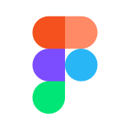

STORY OF THIS PROJECT
Kehidupan di bangku perkuliahan tidak selalu soal mengejar nilai akademik di dalam kelas. Langkah kaki juga perlu diayunkan ke luar untuk menyelami dunia organisasi dan mengasah kemampuan komunikasi antaranggota. Peluang itu hadir melalui sebuah kegiatan besar program studi Teknologi Rekayasa Multimedia yang bernama Immersive Fiesta. Acara ini bukan sekadar pameran biasa, melainkan sebuah panggung besar yang merangkum workshop dan unjuk karya hasil proyek mahasiswa dari seluruh semester, dengan misi utama memperkenalkan pesona program studi ini kepada masyarakat luas.
Di dalam riuhnya kepanitiaan, tanggung jawab utama yang diemban adalah berdiri di garda belakang layar sebagai cameraman live streaming untuk kanal YouTube resmi program studi. Tugas ini menuntut fokus tinggi agar setiap momen berharga dalam pameran dapat tersampaikan dengan jernih kepada penonton di ruang digital. Namun, dinamika kepanitiaan selalu membawa kejutan manis. Di tengah jalannya persiapan, sebuah tugas tambahan datang dari ketua divisi kreatif: merancang animasi motion lower third untuk mempercantik visual grafis selama siaran berlangsung.
Tantangan tak diduga ini langsung disambut sebagai kesempatan emas untuk menunjukkan taji di bidang konsep desain dan kemampuan animasi. Prosesnya tentu tidak instan, lembar demi lembar revisi dari ketua divisi kreatif berdatangan, menguji kesabaran sekaligus menajamkan estetika karya yang sedang dibangun. Melalui proses diskusi dan kurasi yang intens, konsep desain tersebut akhirnya dinyatakan diterima dan siap menghiasi layar kaca.
Pengalaman di Immersive Fiesta ini menjadi sebuah pembuktian berharga. Bahwa di dalam sebuah tim, kontribusi terbaik sering kali lahir ketika seseorang mampu menjalankan tugas utamanya dengan baik, sembari tetap membuka ruang untuk memberikan sentuhan kreativitas ekstra yang membuat keseluruhan acara menjadi lebih hidup.
TOOLS USED FOR THIS PROJECT

FIGMAMari kita bangun sesuatu yang luar biasa bersama
Terbuka untuk kesempatan magang, project freelance atau kolaborasi riset.